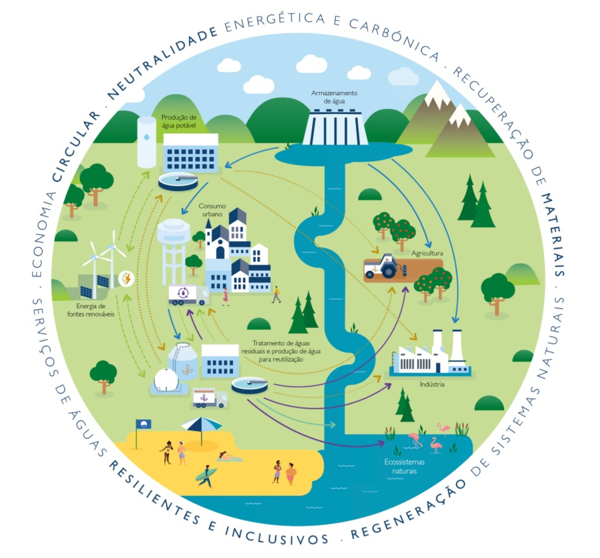
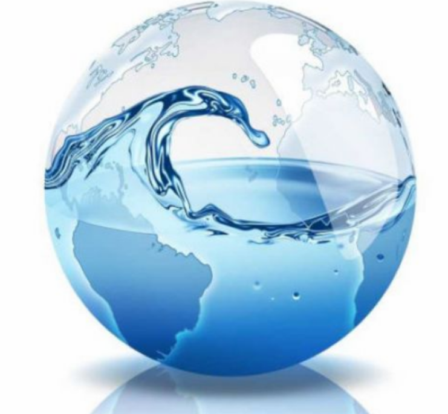

AGRINHO 2025
Festejando Conexão Campo Cidade

Entenda as diferenças no acesso à água entre áreas urbanas e rurais.
Nas cidades, o acesso à água potável é mais estruturado, com sistemas organizados e controle de qualidade. Regiões periféricas ainda enfrentam desafios como falta de saneamento.

No campo, o acesso à água é limitado por fatores como distância de fontes e infraestrutura precária. Muitas comunidades dependem da chuva ou de fontes naturais.

Sistemas públicos de água, tratamento eficaz, mas desigualdade em periferias.
Desperdício, poluição, falta de conscientização e crises hídricas frequentes.
Fontes naturais, infraestrutura limitada, dependência da chuva em muitos locais.
"A água é a força motriz de toda a natureza." – Leonardo da Vinci

Mais voltado para consumo doméstico, indústria e comércio.

Principalmente para irrigação, criação de animais e uso doméstico sem tratamento.

Investimento em tecnologias sustentáveis, políticas públicas inclusivas e educação ambiental são fundamentais.
Infraestrutura de abastecimento para áreas rurais e urbanas vulneráveis.
Projetos em escolas e comunidades sobre economia e reuso da água.
Captação da água da chuva, irrigação por gotejamento, reutilização doméstica.
• Uma torneira aberta por 5 minutos pode desperdiçar até 80 litros de água.
• Um banho de 10 minutos com o chuveiro ligado consome cerca de 100 a 180 litros de água.